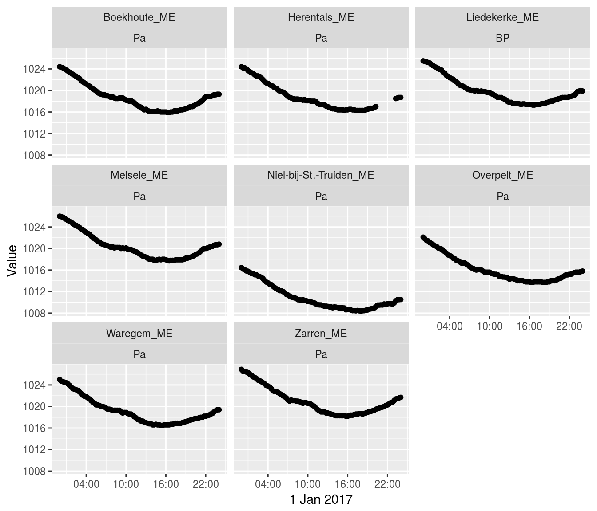
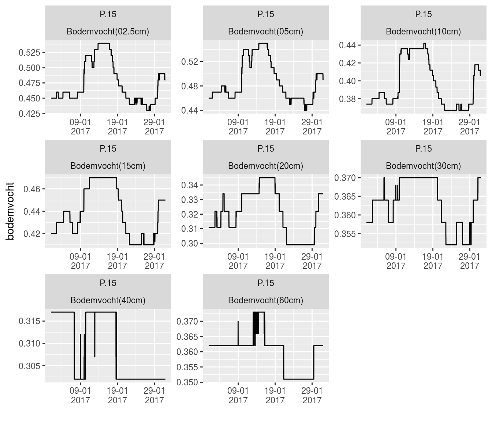

In many studies, the interest of the user is to download a batch of time series following on a selection criterion. Examples are:
In this vignette, this type of batch downloads is explained, using the available functions of the wateRinfo package in combination with already existing tidyverse functionalities.
library(dplyr)
library(ggplot2)Consider the scenario: “downloading air pressure data for the last day for all available measurement stations”. We can achieve this by downloading all the stations information providing air_pressure data (get_stations()) and for each of the ts_id values in the resulting data.frame, applying the get_timeseries_tsid() function:
# extract the available stations for a predefined variable
variable_of_interest <- "air_pressure"
stations <- get_stations(variable_of_interest)
# Download the data for a given period for each of the stations
air_pressure <- stations %>%
group_by(ts_id) %>%
do(get_timeseries_tsid(.$ts_id, period = "P1D", to = "2017-01-02")) %>%
ungroup() %>%
left_join(stations, by = "ts_id")As this results in a tidy data set, we can use the power of ggplot to plot the data of the individual measurement stations:
# create a plot of the individual datasets
air_pressure %>%
ggplot(aes(x = Timestamp, y = Value)) +
geom_point() + xlab("1 Jan 2017") +
facet_wrap(c("station_name", "stationparameter_name")) +
scale_x_datetime(date_labels = "%H:%M",
date_breaks = "6 hours")
Consider the scenario: “downloading all soil_moisture (in dutch: ‘bodemvocht’) variables at a frequency of 15 minutes for the measurement station Liedekerke”. We can achieve this by downloading all the variables information of the Liedekerke station(get_variables()) using the station code of the waterinfo.be interface (ME07_006), filtering on the P.15 time series and for each of the ts_id values, applying the get_timeseries_tsid() function:
liedekerke_stat <- "ME07_006"
variables <- get_variables(liedekerke_stat)
variables_to_download <- variables %>%
filter(parametertype_name == "Bodemvocht") %>%
filter(ts_name == "P.15")
liedekerke <- variables_to_download %>%
group_by(ts_id) %>%
do(get_timeseries_tsid(.$ts_id, period = "P1M", from = "2017-01-01")) %>%
ungroup() %>%
left_join(variables, by = "ts_id")As this results in a tidy data set, we can use the power of ggplot to plot the data of the individual measurement stations:
liedekerke %>%
ggplot(aes(x = Timestamp, y = Value)) +
geom_line() + xlab("") + ylab("bodemvocht") +
facet_wrap(c("ts_name", "stationparameter_name"), scales = "free") +
scale_x_datetime(date_labels = "%d-%m\n%Y",
date_breaks = "10 days") 